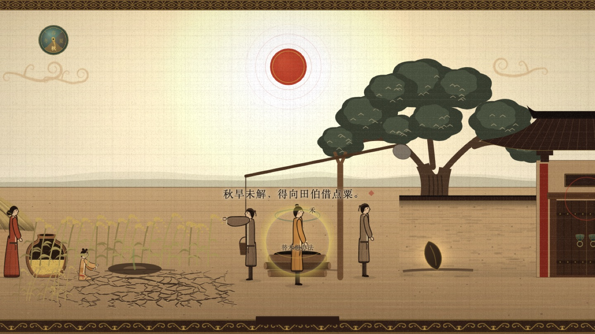
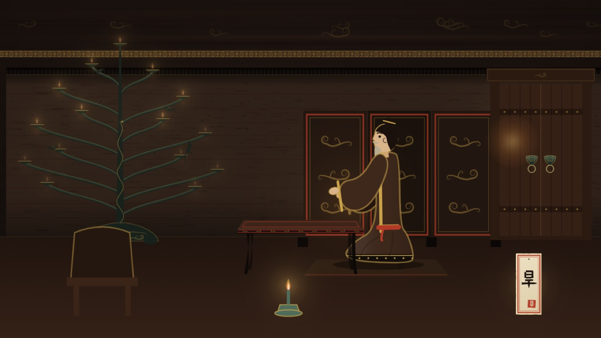

竹子 · 个人呈现 Agent
只为你， 开一扇门。
竹子是一台只为一个人存在的机器。你推门进去，它认出一个具体的处境，把一个人物放进你心里；走的时候，你带走一条没收口的线。
推门，遇见禾首轮试玩《推门·旱》 · 战国 · 临淄东郊
 灯还亮着。进来坐。
灯还亮着。进来坐。
不是问一句，答一句。
这是导演管线，不是聊天机器人。它不把答案交到你手里，而是把你放进一个处境，让人物、物件和你的动作一起说话。
问答你问 → 它答 → 对话结束
竹子你来 → 世界展开 → 一个人留在心里
一件作品，怎样发生
从意图，到一次来访。
先导演，再呈现。 每一步都留下可检查的东西。
- 一
意图
这次来访，要留下什么？
intent.json - 二
方案
人物、处境、焦点与幕序。
plan.json - 三
校验
先检查契约，再允许构建。
校验报告 - 四
构建
生成一件可独立打开的作品。
index.html - 五
模拟玩家试映
真的走一遍，留下证据。
shots · trace · bench
这一件：first-visit → seed 50 → L1 → 《推门·旱》。下面就是这次管线留下的原始作品。
留一点时间，给一个人
推门 · 旱
拿起票根，临淄城从手里散开。在东郊遇见农夫禾，帮他想办法借粟过冬。
- 拿起票根
- 票根散成临淄城
- 东郊遇见禾
- 帮他借粟过冬
- 三次叩门，对照预演与实情
点门开始。你是禾心里的一个声音，他会自己决定。声音在第一次动手后响起；试玩正文保留中文。


有记录，才算发生过
可验证，不靠自评。
以下是 seed 50 / L1 的一次脚本实测，取自 bench.json。它证明程序表现与复现结果，不代表每台设备的性能，也不代表人已进入心流。
- 首个可操作
- 0.02s
- 每幕前 3 秒可做的事
- ≤ 1
- 反馈 p90
- 263ms
- 每屏可见字数
- ≤ 25
- 控制台报错
- 0
- 帧率 fps-p5
- 60
- 删字测试
- PASS
- 同 seed 复现
- PASS
前 3 秒可做的事最大值 = 1（返屋幕 = 0）。同 seed、同操作下，50 条事实、台词、幕序与真实账本一致；不同 seed 的田伯也已查出差异。263ms 通过 1000ms 硬门槛，但 100ms 设计目标尚未全部达到。
硬指标由脚本判，不由模型判。
审美分只来自 critic：与生成不同的模型，看截图，与参考集配对比较。
改机器， 不修饰结果。
作品只能由导演管线产出，不手写、不手改产物。
不满意，只能改六处：
- frameworks
- components
- assets/library
- eras / style-bible
- director / seed-memory
- critic
每次改动，用新 seed 从零重跑，证明改进可复现；复现失败就回退。
门槛只升不降。golden / holdout 只用于评测，不读入生成或调参。
在自己的机器上，再推一次门
本地怎么跑
pnpm install
npx playwright install chromium
pnpm dev
pnpm present --intent intents/first-visit.json --tier L1 --seed 1
pnpm bench runs/first-visit/1/L1在竹子仓库中运行。pnpm dev 是交互预览；另开一个终端运行 present 与 bench。
去 GitHub 看竹子wordmus/zhuzi · MIT ↗